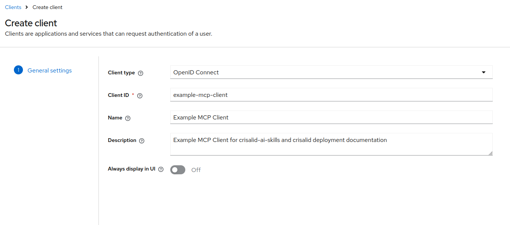
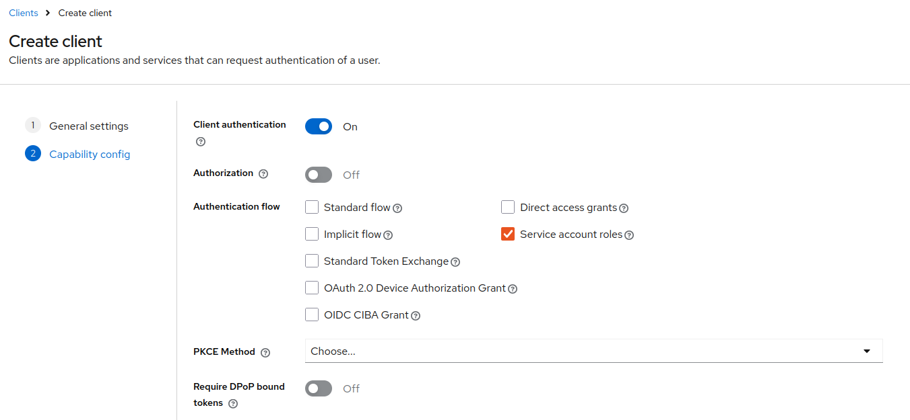
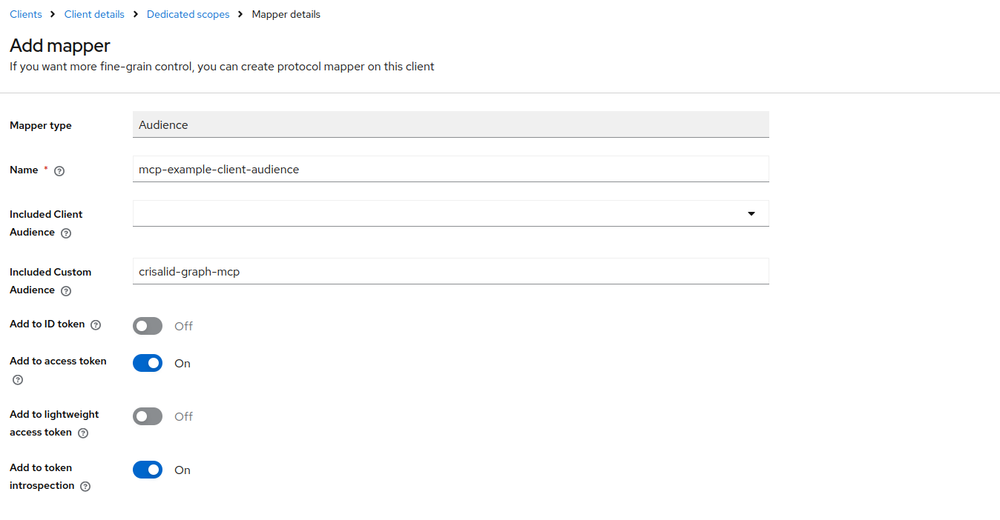

Using CRISalid AI Skills
The Neo4j MCP Toolbox exposes curated Cypher queries as MCP tools, making it easy to integrate structured CRISalid knowledge graph data into LLM-based agents and workflows.
Two toolsets are available:
| Toolset | Tools |
|---|---|
crisalid-restricted |
get-crisalid-schema, list-person-publications |
crisalid-unrestricted |
above + execute-cypher-readonly |
All tools in the restricted toolset require a valid JWT — clients must authenticate via a Keycloak service account.
1. Expose the Toolbox Port on the Host
By default, the neo4j-mcp service only exposes port 5000 inside the Docker network. Other containers (e.g. an LLM agent running in the same stack) can reach it at http://neo4j-mcp:5000 without any extra configuration.
To access the toolbox from the host machine (e.g. during development or from an external client), uncomment the ports: section in docker/neo4j-mcp/neo4j-mcp.yaml:
# ports:
# - "5000:5000"Then restart the service:
docker compose \
-f docker-compose.yaml \
-f docker-compose.prod.yaml \
--profile neo4j-mcp \
up -d --no-deps --force-recreate neo4j-mcpThe toolbox will then be reachable at http://localhost:5000 on the host.
2. Create a Keycloak Service Account
Each client application that calls the MCP toolbox needs its own dedicated Keycloak service account. The steps below create one example account — repeat them for every client.
Step 1 — Create the client
In Keycloak admin → Clients → Create client.
Set Client type to OpenID Connect and choose a Client ID (e.g. example-mcp-client):

Step 2 — Configure capabilities
On the next screen (Capability config):
- Enable Client authentication
- Check Service account roles only — uncheck Standard flow and Direct access grants

Step 3 — Add an Audience mapper
The toolbox validates the JWT aud claim against the fixed value crisalid-graph-mcp. By default Keycloak does not include this in the token — you must add a mapper.
Navigate to: Clients → your client → Client scopes → click the dedicated scope (<client-id>-dedicated) → Add mapper → Configure a new mapper → Audience.
Fill in the mapper as shown:
- Name:
mcp-example-client-audience - Included Custom Audience:
crisalid-graph-mcp - Add to access token: On

Step 4 — Note the client secret
Go to Clients → your client → Credentials and copy the secret. You will pass it as KEYCLOAK_CLIENT_SECRET in your client environment.
3. Example Client (Python)
Install the dependency:
pip install toolbox-langchain
# or with uv:
uv add toolbox-langchainThe following example connects to the toolbox, authenticates against Keycloak using the client_credentials grant, and loads the restricted toolset:
import asyncio
import os
import httpx
from toolbox_core.protocol import Protocol
from toolbox_langchain import ToolboxClient
TOOLBOX_URL = "http://localhost:5000" # adjust if running inside the Docker network
KEYCLOAK_ISSUER = os.environ["KEYCLOAK_ISSUER"] # e.g. https://keycloak.example.org/realms/crisalid-inst
KEYCLOAK_CLIENT_ID = os.environ["KEYCLOAK_CLIENT_ID"] # e.g. example-mcp-client
KEYCLOAK_CLIENT_SECRET = os.environ["KEYCLOAK_CLIENT_SECRET"]
def get_token() -> str:
response = httpx.post(
f"{KEYCLOAK_ISSUER}/protocol/openid-connect/token",
data={
"grant_type": "client_credentials",
"client_id": KEYCLOAK_CLIENT_ID,
"client_secret": KEYCLOAK_CLIENT_SECRET,
},
)
response.raise_for_status()
return response.json()["access_token"]
async def main():
async with ToolboxClient(TOOLBOX_URL, protocol=Protocol.MCP_LATEST) as toolbox:
tools = await toolbox.aload_toolset(
"crisalid-restricted",
auth_token_getters={"crisalid-keycloak": get_token},
)
print(f"Loaded {len(tools)} tool(s): {[t.name for t in tools]}")
schema_tool = next(t for t in tools if t.name == "get-crisalid-schema")
result = await schema_tool.ainvoke({})
print(result)
asyncio.run(main())Protocol.MCP_LATEST is required — toolbox v1.1.0 and above enforce the MCP protocol version on the client handshake.
The toolset name passed to aload_toolset() must match one of the toolsets served by the toolbox (crisalid-restricted or crisalid-unrestricted). The auth token getter key (crisalid-keycloak) must match the auth service name configured in the toolbox.